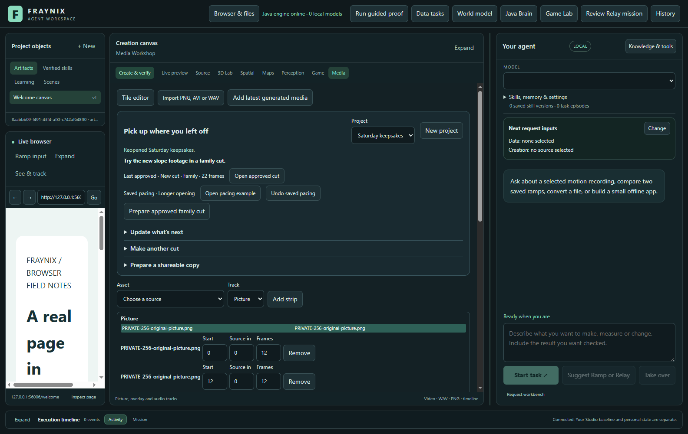
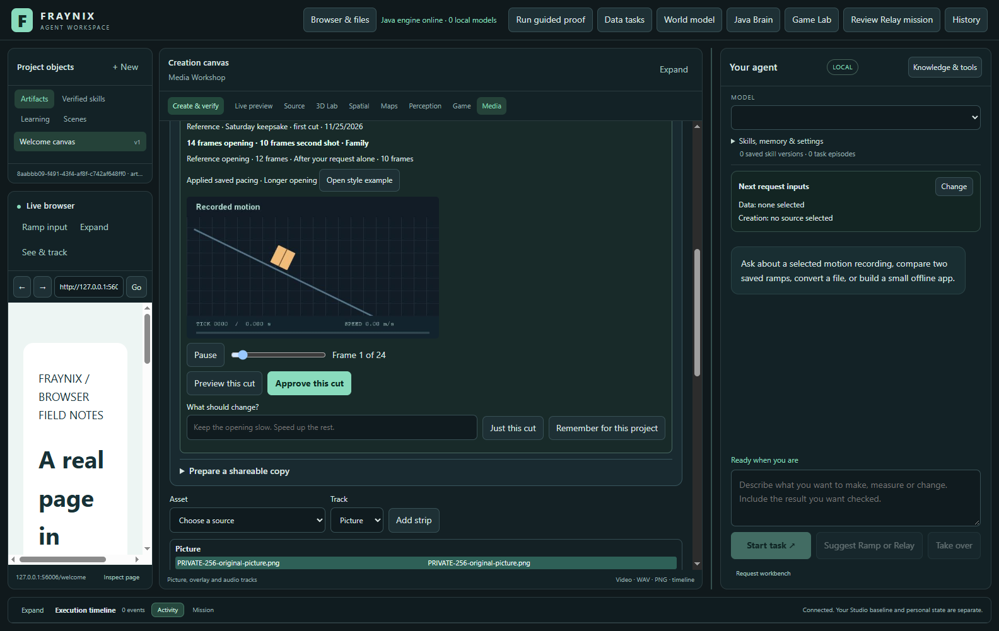
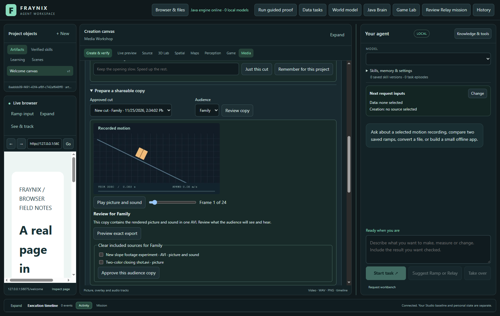
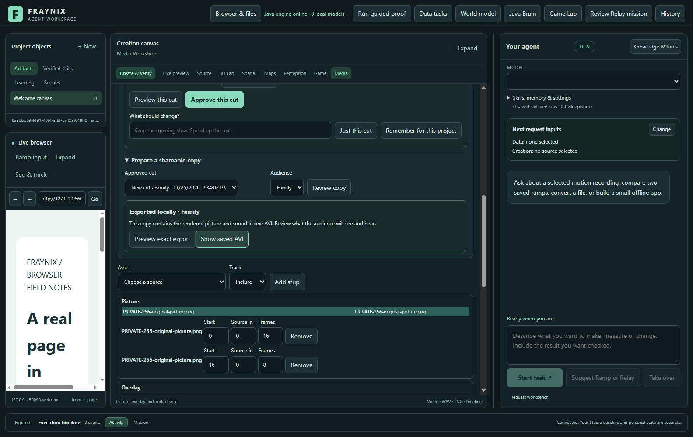

Resume a project, teach pacing and prepare an audience copy
The same fresh footage yielded different cut timing after the project remembered an approved pacing choice.
Listen to the source selected for the family edit.

The project reopens with its next intention, approved cut and saved pacing

The same request retains a longer opening when saved pacing is enabled

The family review shows the actual output and its two included sources

The checked audience copy is exported locally
System files
Open source